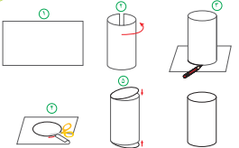

تمرین
1ــ مدیر دبستانی تعداد دانشآموزان علاقهمند به
ورزشهای فوتبال، والیبال و بسکتبال را در پایههای چهارم،
ّ پنجم و ششم پیدا کرد و در جدول زیر نوشت. با توجه به این اطّلاعات، به سؤالها پاسخ دهید
| چهارم | پنجم | ششم | ||||||
| ف | و | ب | ف | و | ب | ف | و | ب |
| 14 | 12 | 8 | 12 | 10 | 14 | 10 | 12 | 10 |
ــ تعداد دانشآموزان علاقهمند به این سه ورزش در کلاس پنجم چند نفر است؟
ــ تعداد علاقهمندان به فوتبال چند نفر است؟
ــ تعداد علاقه ّ مندان به بسکتبال در کدام کلاس از بقیه بیشتر است؟
ــ در کدام کلاس بیشترین تعداد علاقهمند به فوتبال وجود دارد؟
2ــ کیوان و بهرام با هم بازی میکنند.هر کس که جمع
امتیازاتش بیشتر باشد، برنده است.این جدول نشان میدهد که هر یک از آن دو چند امتیاز گرفته است. چه کسی و با چه ِ مقدار اختلاف امتیاز برنده میشود؟
| بهرام | کیوان | بازیکن / دور |
| 100 | 125 | دور1 |
| 100 | 125 | دور2 |
| 100 | 150 | دور3 |
| 150 | 100 | دور4 |
| جمع |
کاردستی بساز
با توجه به شکل های زیر یک استوانه بسازید.

1ــ یک برگه کاغذ بردارید. ٢ــ مانند شکل دو سر برگه را به هم بچسبانید. ٣ــ شکل ساخته شده را روی کاغذ بگذارید و دور دهانهی آن خط بکشید. ٤ــ دو دایره به اندازه دهانه شکل ببرید. ٥ــ بالا و پایین شکل را با آن دو دایره بپوشانید
120